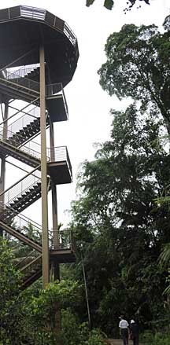
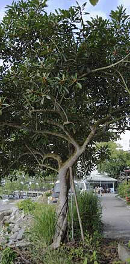
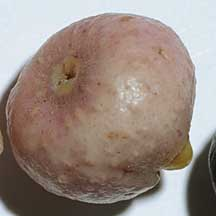
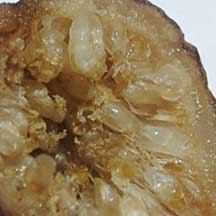
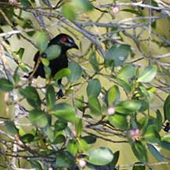
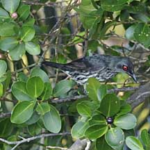
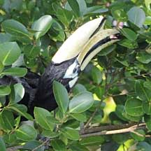

|
|
|
plants
text index | photo
index
|
| Figs
Ficus sp. Family Moraceae updated Mar 10 Where seen? Figs are seen in many of our habitats, from forests to coastal areas. There are more than 900 species of figs globally, with 48 species native to Singapore. Figs may be climbers, creepers, small bushes or huge trees. The most awesome are the strangling figs that begin life as a small plant (from seeds dropped by a bird or climbing animal), high up on a tall host tree. The young fig sends down long roots. When the roots reach the ground, they thicken and encircle the host tree. By shading out and preventing the host tree from thickening its trunk, the now rapidly growing fig eventually 'strangles' and kills the host tree. Features: Figs are fascinating because of their unique flowering structure and intriguing relationship with the tiny fig-wasps that pollinate them. Before the fig becomes a real 'fruit', it is actually an inside-out flower! At first, little round things develop on the tree. These are not (yet) fruits but a fleshy, hollow structure with tiny flowers inside the hollow. This is why we refer to these structures as figs, and we say the tree is 'figging'. After the tiny hidden flowers are fertilised and develop seeds, the fig becomes a compound fruit. That is, all the tiny fertilised fig 'fruits' are fused together. Like in a strawberry or pineapple. But turned inside out! Figs have three kinds of flowers. Female flowers that produce seeds, male flowers that produce pollen and a third kind call the gall flowers. The fig-wasp lays her eggs in the gall flowers, and the developing wasp larvae eat up the gall flowers. Some figs have all three kinds of flowers in one fig. These are called monoecious fig plants. Other figs have two kinds of figs. These are called dioecious fig plants. One kind of fig has only male and gall flowers, called a gall fig. And another kind of fig only female flowers, called a seed fig. These two different kinds of figs appear on different trees. How do the wasps pollinate the figs? There are many variations and different details, but this is what generally happens: There is a tiny hole in the fleshy fig that allows the flying female fig-wasp to enter into the hollow and get to the flowers. As the mama fig-wasp struggles through the opening, she loses her wings. Inside the hollow, she lays her eggs in the gall flowers and dies. These eggs hatch into larvae that eat the gall flower. Male wasps are wingless and are the first to hatch inside the fig. They mate with the winged females. At the same time, the male flowers mature inside the fig and release pollen which dust the females. Also, the hole in the fig opens up, or the male wasps may chew an opening the fig. The pollen dusted females then fly out to another fig. Figs and fig-wasps depend completely on one another. The fig-wasps can only develop in figs, and figs can only be pollinated by fig-wasps. Not only that, each species of figs depends on its own species of fig-wasps, and each fig-wasp on its particular figs! Role in the habitat: Figs play a critical role in many habitats. While other trees in the forest often only fruit at long intervals, fig trees fig regularly and more frequently. The figs are relished by a wide variety of animals from birds to monkeys which disperse the plants. Human uses: Some figs are important culturally. For example, Buddha is believed to have gained enlightenment under the Bodhi tree (Ficus religiosa). Enormous fig trees in Asia often become stuff of legend and are treated with respect. Figs also provide food and medicine. |
 The tall Jejawi fig next to Jejawi Tower. Chek Jawa, Oct 09  The rare Collared fig. Pulau Ubin, Dec 09 |
|
 Small opening in a fig. |
 Flowers inside the hollow of a fig. |
Birds in a figging Jejawi
|
 Chek Jawa, Mar 10 |
 Chek Jawa, Mar 10 |
 Chek Jawa, Mar 10 |
|
References
|